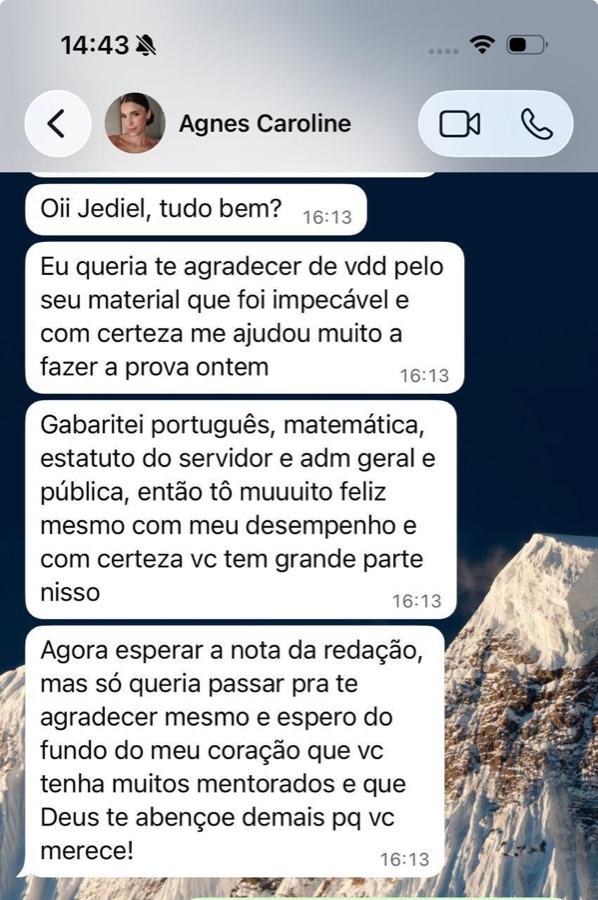
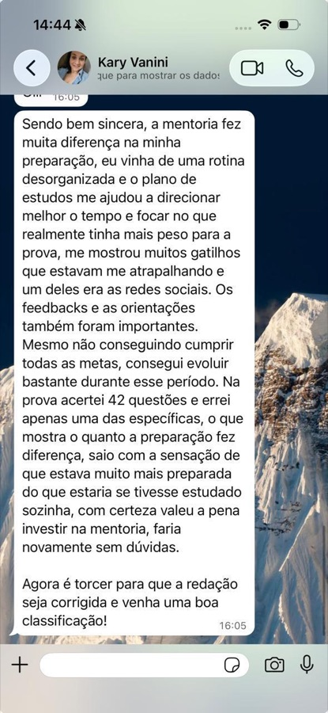

Transpetro
Editais previstos para agosto- Vagas imediatas281
- Vagas em cadastro de reserva3.890
- Provas previstasNovembro
- Remuneração inicial de atéR$ 15.034,81
Transpetro + Petrobras · 2026
Transpetro: 4.171 oportunidades e salários iniciais de até R$ 15 mil. Petrobras: novo concurso no planejamento da Cesgranrio.
Se você é técnico ou engenheiro e quer disputar uma vaga nas maiores empresas do setor de petróleo e energia do país, comece agora uma preparação direcionada para as provas da Cesgranrio.
Conheça a nova turma da Vórtice
Para quem é a Mentoria Vórtice
O acompanhamento é direcionado para candidatos de carreiras técnicas e de engenharia, com preparação adaptada ao cargo, ao edital e ao tempo disponível de cada aluno.
Se o seu objetivo é Transpetro ou Petrobras, sua preparação começa aqui.
Conheça a nova turma da VórticeO que você vai receber
Um encontro individual com Jediel para analisar sua rotina, histórico, dificuldades, disponibilidade de tempo e concurso pretendido. A partir dessas informações, sua preparação será organizada de acordo com a sua realidade.
Encontros ao vivo para acompanhar sua preparação, tirar dúvidas, corrigir problemas e trabalhar os pontos mais importantes até a prova.
Um treinamento completo para você aprender a organizar teoria, revisão e questões sem acumular matérias indefinidamente.
Você terá acesso a uma plataforma para organizar e acompanhar toda a sua preparação em um único lugar.
Seus dados de estudo serão utilizados para identificar onde você está avançando e quais pontos ainda precisam de atenção.
Você receberá materiais direcionados à prova que pretende fazer, evitando perder tempo com conteúdos que não fazem sentido para o seu objetivo.
Um canal específico para receber comunicados e informações importantes relacionadas à sua preparação e aos concursos.
Sua preparação não é sozinha.
Da rotina ao dia da prova, alguém acompanha cada etapa com você.
Bônus
Coloque sua preparação à prova antes do dia oficial e identifique os pontos que ainda precisam ser corrigidos.
Quando o edital for publicado, você receberá uma análise dos principais pontos para ajustar sua preparação ao que efetivamente será cobrado.
Condição especial para utilizar uma das principais plataformas de questões para concursos.
Conteúdo complementar para melhorar retenção, revisão e recuperação das informações estudadas.
Como vamos controlar a sua evolução
Dentro do Vórtice, sua preparação será acompanhada pela Tutory, permitindo transformar sua rotina de estudos em informações que podem ser analisadas ao longo de toda a preparação.
Quanto custaria ter acesso a tudo isso separadamente?
Você não vai pagar R$ 2.913.
A nova turma do Vórtice está com uma condição especial de lançamento.
Veja a experiência de quem já estudou com acompanhamento






Quem será o seu mentor
Engenheiro Mecânico, pós-graduando em Neurociências e Comportamento e mestrando em Engenharia Elétrica e Computação.
Além da formação acadêmica, Jediel conhece na prática o caminho de preparação para concursos. Foi aprovado em 1º lugar em Engenharia Mecânica na Itaipu Binacional, a maior usina produtora de energia hidrelétrica do mundo.
No Vórtice, Jediel utiliza sua experiência para acompanhar candidatos das áreas técnicas e de engenharia que buscam aprovação em concursos como Transpetro e Petrobras.
Perguntas frequentes
Sim. Depois do Raio-X individual, sua preparação é organizada em um cronograma montado a partir da sua rotina, do tempo que você tem por dia e do cargo que pretende disputar — não é um cronograma genérico distribuído para a turma inteira. Ele fica dentro da Tutory, onde você acompanha teoria, revisão e questões no mesmo lugar.
Depende do plano que você escolher: trimestral, semestral ou anual. Em todos eles a estrutura é a mesma — Raio-X individual, encontros quinzenais ao vivo, plataforma e acompanhamento; o que muda é por quanto tempo você fica acompanhado. Na hora da conversa no WhatsApp a gente vê qual faz sentido para a distância até a sua prova.
Tem. Os simulados periódicos são um dos bônus da turma e servem para você medir onde está antes do dia oficial — e ainda dar tempo de corrigir o que aparecer.
Você recebe materiais direcionados do Estratégia para a prova que pretende fazer, selecionados a partir do edital e do que a Cesgranrio realmente cobra no seu cargo. Também entra um cupom com condição especial no TEC Concursos, para a parte de questões. Assinaturas completas de plataforma não estão incluídas na mentoria.
Não. A mentoria atende tanto quem está começando do zero quanto quem já estuda e está travado. É justamente o que o Raio-X individual resolve: entender de onde você parte, quanto tempo tem e o que precisa mudar antes de montar qualquer coisa.
Quando o edital for publicado, você recebe a análise dos principais pontos e sua preparação é reajustada ao que efetivamente vai cair. Essa é uma das razões de começar antes do edital: quando ele sai, você já tem base — só precisa acertar a mira.
Você tem 7 dias de garantia. Nesse período você entra, faz o Raio-X, conhece a plataforma e o Método Espiral por dentro. Se concluir que não é para você, é só pedir o reembolso dentro dos 7 dias e devolvemos 100% do valor — sem precisar justificar nada. O risco desses primeiros dias é nosso, não seu.
Nova turma Vórtice
Fale com a equipe do Vórtice e garanta sua vaga na nova turma antes que as inscrições se encerrem.
Falar com a equipe do Vórtice